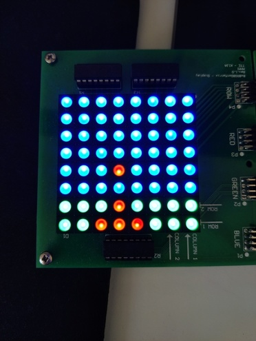

In this game, you will defend Earth from invading UFOs by controlling the mobile cannon on the ground.
This cannon will shoot down the attackers, and hopefully save earth.
The cannon is controlled by using the joystick module on the PCB connected to the XADC, as seen in the picture on the front page.
Pressing on the joystick fires a projectile at the UFOs.
The game speed is controlled by rotating the potentiometer on the same PCB.
If a UFO manages to land on the ground, you will lose one of your four lives, as indicated by the green LEDs on the Zybo board.
If all your lives are lost, the game ends.

Figure: Picture of the default cannon on ground, with a bullet mid-air.